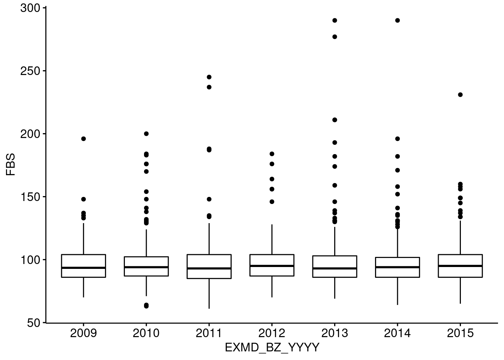

library(data.table);library(magrittr);library(ggpubr);library(rvg);library(officer)
a <- fread("https://raw.githubusercontent.com/jinseob2kim/R-skku-biohrs/main/data/example_g1e.csv")SKKU BIOHRS-MIDTERM Review
data URL: 아래 url을 불러와 문제를 해결하시오.
“https://raw.githubusercontent.com/jinseob2kim/R-skku-biohrs/main/data/example_g1e.csv”
R코드와 실행결과를 모두 아래 메일로 보내주십시오.
- lisalee1208@naver.com
- jinseob2kim@gmail.com
필요한 library 및 데이터 불러오기
EXMD_BZ_YYYY RN_INDI HME_YYYYMM Q_PHX_DX_STK Q_PHX_DX_HTDZ Q_PHX_DX_HTN
1: 2009 562083 200909 0 0 1
2: 2009 334536 200911 0 0 0
3: 2009 911867 200903 0 0 0
4: 2009 183321 200908 NA NA NA
5: 2009 942671 200909 NA NA NA
6: 2009 979358 200912 NA NA NA
Q_PHX_DX_DM Q_PHX_DX_DLD Q_PHX_DX_PTB Q_HBV_AG Q_SMK_YN Q_DRK_FRQ_V09N HGHT
1: 0 0 NA 3 1 0 144
2: 0 0 NA 2 1 0 162
3: 0 0 NA 3 1 0 163
4: NA NA NA 3 1 0 152
5: NA NA NA 3 1 0 159
6: NA NA NA 2 1 0 157
WGHT WSTC BMI VA_LT VA_RT BP_SYS BP_DIA URN_PROT HGB FBS TOT_CHOL TG HDL
1: 61 90 29.4 0.7 0.8 120 80 1 12.6 117 264 128 60
2: 51 63 19.4 0.8 1.0 120 80 1 13.8 96 169 92 70
3: 65 82 24.5 0.7 0.6 130 80 1 15.0 118 216 132 55
4: 51 70 22.1 0.8 0.9 101 62 1 13.1 90 199 100 65
5: 50 73 19.8 0.7 0.8 132 78 1 13.0 92 162 58 40
6: 55 73 22.3 1.5 1.5 110 70 1 11.9 100 192 109 53
LDL CRTN SGOT SGPT GGT GFR
1: 179 0.9 25 20 25 59
2: 80 0.9 18 15 28 74
3: 134 0.8 26 30 30 79
4: 114 0.9 18 14 11 61
5: 111 0.9 24 23 15 49
6: 117 0.7 15 12 14 83Q1. “Q_” 로 시작하는 변수는 범주형(factor)으로, 나머지 변수는 숫자형(integer)으로 만드시오.
# "Q_"로 시작하는 변수 추출하는 두 가지 방법
var.factor <- names(a)[c(4:12)]
# or
var.factor <- grep("Q_", names(a), value = T) var.factor[1] "Q_PHX_DX_STK" "Q_PHX_DX_HTDZ" "Q_PHX_DX_HTN" "Q_PHX_DX_DM"
[5] "Q_PHX_DX_DLD" "Q_PHX_DX_PTB" "Q_HBV_AG" "Q_SMK_YN"
[9] "Q_DRK_FRQ_V09N"# 위에서 추출한 변수를 제외한 나머지 변수 추출하는 두 가지 방법
var.conti <- setdiff(names(a), var.factor)
# or
var.conti <- names(a)[!(names(a) %in% var.factor)] # ! = 'not', %in% = 'including'var.conti [1] "EXMD_BZ_YYYY" "RN_INDI" "HME_YYYYMM" "HGHT" "WGHT"
[6] "WSTC" "BMI" "VA_LT" "VA_RT" "BP_SYS"
[11] "BP_DIA" "URN_PROT" "HGB" "FBS" "TOT_CHOL"
[16] "TG" "HDL" "LDL" "CRTN" "SGOT"
[21] "SGPT" "GGT" "GFR" # 각각 범주형과 숫자형 변수로 class 설정하는 두 가지 방법
for (v in var.factor){ # for 반복문 : as.factor() 함수 사용
a[[v]] <- as.factor(a[[v]])
}
for (v in var.conti){ # for 반복문 : as.numeric() 함수 사용
a[[v]] <- as.numeric(a[[v]])
}
# or
a[, (var.factor) := lapply(.SD, as.factor), .SD = var.factor]
a[, (var.conti) := lapply(.SD, as.numeric), .SD = var.conti]# class 잘 변환되었는지 확인하는 방법
# 답안 제출 시에는 작성할 필요 없음.
sapply(a, class) EXMD_BZ_YYYY RN_INDI HME_YYYYMM Q_PHX_DX_STK Q_PHX_DX_HTDZ
"numeric" "numeric" "numeric" "factor" "factor"
Q_PHX_DX_HTN Q_PHX_DX_DM Q_PHX_DX_DLD Q_PHX_DX_PTB Q_HBV_AG
"factor" "factor" "factor" "factor" "factor"
Q_SMK_YN Q_DRK_FRQ_V09N HGHT WGHT WSTC
"factor" "factor" "numeric" "numeric" "numeric"
BMI VA_LT VA_RT BP_SYS BP_DIA
"numeric" "numeric" "numeric" "numeric" "numeric"
URN_PROT HGB FBS TOT_CHOL TG
"numeric" "numeric" "numeric" "numeric" "numeric"
HDL LDL CRTN SGOT SGPT
"numeric" "numeric" "numeric" "numeric" "numeric"
GGT GFR
"numeric" "numeric" Q2. 연속 변수 “WSTC”와 “BMI”의 연도별 평균 및 표준편차를 구하시오.
# aggregate() 함수 : 데이터의 특정 변수를 기준으로 통계량을 구해주는 함수
# aggregate(data, '기준이 되는 변수', 함수)
mean <- aggregate(a[,c("WSTC","BMI")], list(a$EXMD_BZ_YYYY), mean)
sd <- aggregate(a[,c("WSTC","BMI")], list(a$EXMD_BZ_YYYY), sd)aggregate(a[,c("WSTC","BMI")], list(a$EXMD_BZ_YYYY), mean) Group.1 WSTC BMI
1 2009 79.55607 23.76402
2 2010 80.84746 23.82712
3 2011 80.61883 23.96009
4 2012 80.91453 24.08932
5 2013 80.84774 23.75391
6 2014 80.71260 23.78031
7 2015 81.20417 24.28167aggregate(a[,c("WSTC","BMI")], list(a$EXMD_BZ_YYYY), sd) Group.1 WSTC BMI
1 2009 9.528023 3.392946
2 2010 9.528124 3.274275
3 2011 9.167756 3.456105
4 2012 9.627904 3.338900
5 2013 9.564778 3.329659
6 2014 9.473913 3.323959
7 2015 9.939776 3.544363both <- aggregate(cbind(WSTC, BMI) ~ EXMD_BZ_YYYY, data = a, function(x){c(mean = mean(x), sd = sd(x))})aggregate(cbind(WSTC, BMI) ~ EXMD_BZ_YYYY, data = a, function(x){c(mean = mean(x), sd = sd(x))}) EXMD_BZ_YYYY WSTC.mean WSTC.sd BMI.mean BMI.sd
1 2009 79.556075 9.528023 23.764019 3.392946
2 2010 80.847458 9.528124 23.827119 3.274275
3 2011 80.618834 9.167756 23.960090 3.456105
4 2012 80.914530 9.627904 24.089316 3.338900
5 2013 80.847737 9.564778 23.753909 3.329659
6 2014 80.712598 9.473913 23.780315 3.323959
7 2015 81.204167 9.939776 24.281667 3.544363Q3. 연도별 “FBS”를 나타내는 Boxplot을 그리고 pptx로 저장하시오. (x축: “EXMD_BZ_YYYY”, y축: “FBS”)
# Boxplot 그리기
p <- ggboxplot(data= a, x= "EXMD_BZ_YYYY", y= "FBS")ggboxplot(data= a, x= "EXMD_BZ_YYYY", y= "FBS")
# pptx로 저장하기
plot_file <- read_pptx() %>%
add_slide() %>% ph_with(dml(ggobj = p), location = ph_location_type(type="body"))
print(plot_file, target = "plot_file.pptx")